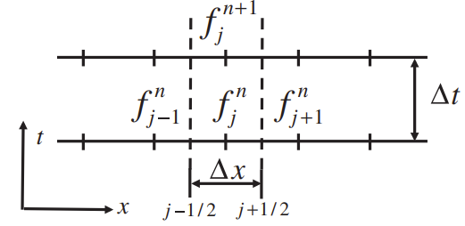

The control volumes are of width $\Delta x$ and the boundaries (the dashed lines) are located half way between the nodes, at $x_{i \pm 1/2}$. If we approximate the integral by $\Delta x f_j$ and use the same one-sided approximation for the time derivative as we used for the finite difference approach, then the conservation law becomes $$ \frac{f_j^{n+1} - f_j^n}{\Delta t} = \frac{1}{\Delta x}(F_{\text{in}} - F_{\text{out}}) $$

Evaluating the fluxes at the current time step and identifying $F_{\text{out}} = F_{j+1/2}^n$ and $F_{\text{in}} = F_{j-1/2}^n$ $$ \frac{f_j^{n+1} - f_j^n}{\Delta t} = \frac{F_{j+1/2}^n - F_{j-1/2}^n}{\Delta x} $$ To compute the fluxes, approximate $f$ at the $j+1/2$ boundary as the average of the average value of $f$ in the $j$ and the $j+1$ control volume and the first derivative of $f$ as the difference between $f_{j+1}$ and $f_j$, divided by $\Delta x$ $$ F_{j+1/2} = \frac{U}{2}(f_{j+1} + f_j) - D\left(\frac{f_{j+1} - f_j}{\Delta x}\right) $$
1Ferziger, Joel & Perić, Milovan & Street, Robert. (2020). Computational Methods for Fluid Dynamics. 10.1007/978-3-319-99693-6.